import numpy as np
import pandas as pd
import os
import json
import requests
import shutil
import matplotlib.pyplot as plt
import seaborn as sns
from sklearn.preprocessing import normalize
import plotly.express as px
from _cde_compute_edges_from_nodes import *
pd.set_option('display.max_columns', None)
pd.set_option('display.max_rows', None)
# suppress warnings
import warnings
warnings.filterwarnings("ignore")Distance Analysis: lymphnode-codex-yale
Analyze and visualize cell-to-nearest-endothelial-cell distance distributions for the
lymphnode-codex-yale dataset.
basepath = "/u/yashjain/hra-cell-distance-analysis/data"
dataset_dir = "lymphnode-codex-yale"
data_filedir = os.path.join("data-processed-nodes-with-harmonized-cell-types", dataset_dir)
output_edge_dir = os.path.join("data-processed-edges", dataset_dir)
figures_output_dir = "generated-figures"# Function to load your data
def load_data(path, edges=False):
if edges:
column_names = ['cell_id', 'x1', 'y1', 'z1', 'x2', 'y2', 'z2']
data = pd.read_csv(path, header=None, names=column_names)
else:
data = pd.read_csv(path)
return data# Function to read all files ending with "-nodes.csv" in the `data_filedir` directory into a single DataFrame.
# Another additional column `Dataset` is added to identify the dataset name which comes from the filename before the `-nodes.csv` suffix.
# Additionally, function reads all files ending with "-edges.csv" in the `output_edge_dir` directory into a single DataFrame.
# Three additional columns are added "Dataset", "Anchor Cell Type", and "Anchor Cell Type Level" to identify the dataset name, anchor cell type, and anchor cell type level respectively which come from the filename before the `.csv` suffix.
# The three additional columns are created by splitting the filename on the `-` character, and extracting the relevant parts.
# On splitting, the first part is the dataset name, second part is the anchor cell type level, and third part is the anchor cell type, and last part is the `edges` suffix.
# When reading files, check if the file has the correct format (i.e., ends with `-edges.csv`).
# Additionally, the function merges the edges DataFrame with the nodes DataFrame to get the cell type information for the anchor cells.
# This is done by reading the corresponding nodes file from the `data_filedir` directory for each edges file, and merging it with the edges DataFrame on the `cell_id` column.
# The merged DataFrame contains the edges with additional columns for the cell type information.
# The function returns three DataFrames:
# 1. `merged_nodes`: DataFrame containing all nodes with an additional column `Dataset`.
# 2. `merged_edges`: DataFrame containing all edges with additional columns `Dataset`, `Anchor Cell Type`, and `Anchor Cell Type Level`.
# 3. `merged_nodes_for_all_edges`: DataFrame containing all edges with additional columns `Dataset`, `Anchor Cell Type`, `Anchor Cell Type Level`, and the cell type information for cells.
def read_all_edge_datasets(basepath, data_filedir, output_edge_dir):
all_nodes_files = []
all_edges_files = []
all_nodes_edges_files = []
for file in os.listdir(os.path.join(basepath, output_edge_dir)):
if file.endswith("-edges.csv"):
file_path = os.path.join(basepath, output_edge_dir, file)
dataset_name, anchor_cell_type_level, anchor_cell_type = file.replace("-edges.csv", "").split('-')
edges_df = load_data(file_path, edges=False)
edges_df['Dataset'] = dataset_name
edges_df['Anchor Cell Type'] = anchor_cell_type
edges_df['Anchor Cell Type Level'] = anchor_cell_type_level
edges_df.rename(columns={"distance": "Distance"}, inplace=True) # Rename column "distance" to "Distance".
all_edges_files.append(edges_df)
# Read the corresponding nodes file from data_filedir to get the cell type information
nodes_file_path = os.path.join(basepath, data_filedir, f"{dataset_name}-nodes.csv")
nodes_df = load_data(nodes_file_path)
nodes_df['Dataset'] = dataset_name
all_nodes_files.append(nodes_df)
# Add a new 'cell_id' column to nodes_df
nodes_df['cell_id'] = range(len(nodes_df))
# Set 'cell_id' column as index for nodes_df
nodes_df.set_index('cell_id', inplace=True)
# Merge edges_df with nodes_df to get the cell type information for the anchor cells
edges_nodes_df = pd.merge(edges_df, nodes_df[['Level Three Cell Type', 'Level Two Cell Type', 'Level One Cell Type']], how='left', left_on='cell_id', right_index=True)
all_nodes_edges_files.append(edges_nodes_df)
merged_edges = pd.concat(all_edges_files, ignore_index=True)
merged_nodes = pd.concat(all_nodes_files, ignore_index=True)
merged_nodes_for_all_edges = pd.concat(all_nodes_edges_files, ignore_index=True)
return merged_nodes, merged_edges, merged_nodes_for_all_edgesdef create_directory(directory):
if not os.path.exists(directory):
os.makedirs(directory)
print(f"Directory '{directory}' created successfully.")
else:
print(f"Directory '{directory}' already exists.")Get initial statistics and identify endothelial cell categories for dataset.
df_all_nodes, df_all_edges, df_all_edges_with_cell_types = read_all_edge_datasets(basepath, data_filedir, output_edge_dir)df_all_nodes.head(5)| x | y | Original Cell Type | Level Three Cell Type | Level Three CL Label | Level Three CL ID | CL_Match/3 | Level Two Cell Type | Level Two CL Label | Level Two CL ID | CL_Match/2 | Level One Cell Type | Level One CL Label | Level One CL ID | CL_Match/1 | Dataset | |
|---|---|---|---|---|---|---|---|---|---|---|---|---|---|---|---|---|
| 0 | 26180.447514 | 8865.939227 | FDC | dendritic cell:follicular | follicular dendritic cell | CL:0000442 | skos:exactMatch | dendritic cell | dendritic cell | CL:0000451 | skos:exactMatch | mesenchymal cell | mesenchymal cell | CL:0008019 | skos:exactMatch | LN00560 |
| 1 | 15214.596774 | 11441.217742 | FDC | dendritic cell:follicular | follicular dendritic cell | CL:0000442 | skos:exactMatch | dendritic cell | dendritic cell | CL:0000451 | skos:exactMatch | mesenchymal cell | mesenchymal cell | CL:0008019 | skos:exactMatch | LN00560 |
| 2 | 7498.846154 | 12306.583333 | FDC | dendritic cell:follicular | follicular dendritic cell | CL:0000442 | skos:exactMatch | dendritic cell | dendritic cell | CL:0000451 | skos:exactMatch | mesenchymal cell | mesenchymal cell | CL:0008019 | skos:exactMatch | LN00560 |
| 3 | 26618.031142 | 18349.024221 | FDC | dendritic cell:follicular | follicular dendritic cell | CL:0000442 | skos:exactMatch | dendritic cell | dendritic cell | CL:0000451 | skos:exactMatch | mesenchymal cell | mesenchymal cell | CL:0008019 | skos:exactMatch | LN00560 |
| 4 | 8325.500000 | 12150.222222 | FDC | dendritic cell:follicular | follicular dendritic cell | CL:0000442 | skos:exactMatch | dendritic cell | dendritic cell | CL:0000451 | skos:exactMatch | mesenchymal cell | mesenchymal cell | CL:0008019 | skos:exactMatch | LN00560 |
# Print the total number of unique cell types per dataset. Compute separately for each cell type column (Level One Cell Type, Level Two Cell Type, Level Three Cell Type, Original Cell Type).
print("Total number of unique cell types per cell type annnotation level:")
unique_cell_types = {
'Original Cell Type': df_all_nodes['Original Cell Type'].nunique(),
'Level Three Cell Type': df_all_nodes['Level Three Cell Type'].nunique(),
'Level Two Cell Type': df_all_nodes['Level Two Cell Type'].nunique(),
'Level One Cell Type': df_all_nodes['Level One Cell Type'].nunique()
}
for cell_type, count in unique_cell_types.items():
print(f"{cell_type}: {count}")Total number of unique cell types per cell type annnotation level:
Original Cell Type: 34
Level Three Cell Type: 29
Level Two Cell Type: 10
Level One Cell Type: 3# Save the unique cell types containing "endothelial" in name per cell type column (Level One Cell Type, Level Two Cell Type, Level Three Cell Type, Original Cell Type) to a dictionary where the key is the level and the value is a list of unique cell types.
endothelial_cell_types = {
'Original Cell Type': df_all_nodes[df_all_nodes['Original Cell Type'].str.contains("endothelial", case=False, na=False)]['Original Cell Type'].unique().tolist(),
'Level Three Cell Type': df_all_nodes[df_all_nodes['Level Three Cell Type'].str.contains("endothelial", case=False, na=False)]['Level Three Cell Type'].unique().tolist(),
'Level Two Cell Type': df_all_nodes[df_all_nodes['Level Two Cell Type'].str.contains("endothelial", case=False, na=False)]['Level Two Cell Type'].unique().tolist(),
'Level One Cell Type': df_all_nodes[df_all_nodes['Level One Cell Type'].str.contains("endothelial", case=False, na=False)]['Level One Cell Type'].unique().tolist()
}
print("\nEndothelial cell types per cell type annotation level:")
for level, cell_types in endothelial_cell_types.items():
print(f"\n{level}:")
for cell in cell_types:
print(f" - {cell}")
Endothelial cell types per cell type annotation level:
Original Cell Type:
- Endothelial
Level Three Cell Type:
- endothelial cell
Level Two Cell Type:
- endothelial cell
Level One Cell Type:
- endothelial celltype_field_list = ["Level Three Cell Type", "Level Two Cell Type", "Level One Cell Type"] # Skipping Original Cell Type as it is not a hierarchical level.
# Define the anchor cell type (type of endothelial cell) for each level in type_field_list based on available categories in the previous cell. The distance analysis at all three levels will be limited to the specified anchor cell type.
anchor_cell_type_dict = {
'Level Three Cell Type': 'endothelial cell',
'Level Two Cell Type': 'endothelial cell',
'Level One Cell Type': 'endothelial cell'
}Process datasets to add region information to Nodes files.
df_all_nodes.head()| x | y | Original Cell Type | Level Three Cell Type | Level Three CL Label | Level Three CL ID | CL_Match/3 | Level Two Cell Type | Level Two CL Label | Level Two CL ID | CL_Match/2 | Level One Cell Type | Level One CL Label | Level One CL ID | CL_Match/1 | Dataset | |
|---|---|---|---|---|---|---|---|---|---|---|---|---|---|---|---|---|
| 0 | 26180.447514 | 8865.939227 | FDC | dendritic cell:follicular | follicular dendritic cell | CL:0000442 | skos:exactMatch | dendritic cell | dendritic cell | CL:0000451 | skos:exactMatch | mesenchymal cell | mesenchymal cell | CL:0008019 | skos:exactMatch | LN00560 |
| 1 | 15214.596774 | 11441.217742 | FDC | dendritic cell:follicular | follicular dendritic cell | CL:0000442 | skos:exactMatch | dendritic cell | dendritic cell | CL:0000451 | skos:exactMatch | mesenchymal cell | mesenchymal cell | CL:0008019 | skos:exactMatch | LN00560 |
| 2 | 7498.846154 | 12306.583333 | FDC | dendritic cell:follicular | follicular dendritic cell | CL:0000442 | skos:exactMatch | dendritic cell | dendritic cell | CL:0000451 | skos:exactMatch | mesenchymal cell | mesenchymal cell | CL:0008019 | skos:exactMatch | LN00560 |
| 3 | 26618.031142 | 18349.024221 | FDC | dendritic cell:follicular | follicular dendritic cell | CL:0000442 | skos:exactMatch | dendritic cell | dendritic cell | CL:0000451 | skos:exactMatch | mesenchymal cell | mesenchymal cell | CL:0008019 | skos:exactMatch | LN00560 |
| 4 | 8325.500000 | 12150.222222 | FDC | dendritic cell:follicular | follicular dendritic cell | CL:0000442 | skos:exactMatch | dendritic cell | dendritic cell | CL:0000451 | skos:exactMatch | mesenchymal cell | mesenchymal cell | CL:0008019 | skos:exactMatch | LN00560 |
# Iterate through the df_all_data dataframe to create new column "Unique Region" based on the "Dataset" column.
# The "Unique Region" column is created by mapping the region names based on the full dataset name.
df_all_nodes['Unique Region'] = df_all_nodes['Dataset']
# df_all_nodes['Unique Region'] = df_all_nodes['Dataset'].map(region_map)
# df_all_nodes['Unique Region'] = df_all_nodes['Dataset'].str.split('-').str[1].map(region_map)
# Check if the new columns are created correctly.
df_all_nodes[['Dataset', 'Unique Region']].head(5)| Dataset | Unique Region | |
|---|---|---|
| 0 | LN00560 | LN00560 |
| 1 | LN00560 | LN00560 |
| 2 | LN00560 | LN00560 |
| 3 | LN00560 | LN00560 |
| 4 | LN00560 | LN00560 |
# Print all unique regions in the data.
print("\nUnique Regions in the data:")
print(df_all_nodes['Unique Region'].unique())
# Print the total number of unique regions.
print(f"Total number of unique regions: {df_all_nodes['Unique Region'].nunique()}")
# Print number of unique datasets per unique region.
print("\nNumber of unique datasets per unique region:")
for region in df_all_nodes['Unique Region'].unique():
num_datasets = df_all_nodes[df_all_nodes['Unique Region'] == region]['Dataset'].nunique()
print(f"{region}: {num_datasets}")
Unique Regions in the data:
['LN00560' 'LN00837' 'LN22921' 'LN24336' 'LN27766']
Total number of unique regions: 5
Number of unique datasets per unique region:
LN00560: 1
LN00837: 1
LN22921: 1
LN24336: 1
LN27766: 1Process datasets to add region information to Edges files.
df_all_edges.head(5)| cell_id | x1 | y1 | z1 | x2 | y2 | z2 | Distance | Dataset | Anchor Cell Type | Anchor Cell Type Level | |
|---|---|---|---|---|---|---|---|---|---|---|---|
| 0 | 0 | 26180.447514 | 8865.939227 | 0 | 26183.569536 | 8838.370861 | 0 | 27.744582 | LN00560 | endothelial cell | Level Three Cell Type |
| 1 | 1297 | 26171.400000 | 8972.626667 | 0 | 26264.875000 | 8904.781250 | 0 | 115.501412 | LN00560 | endothelial cell | Level Three Cell Type |
| 2 | 3106 | 26140.166667 | 8974.675000 | 0 | 26054.031088 | 8889.103627 | 0 | 121.415805 | LN00560 | endothelial cell | Level Three Cell Type |
| 3 | 3497 | 26051.509259 | 8961.282407 | 0 | 26054.031088 | 8889.103627 | 0 | 72.222822 | LN00560 | endothelial cell | Level Three Cell Type |
| 4 | 49397 | 26015.800000 | 8832.882759 | 0 | 26054.031088 | 8889.103627 | 0 | 67.988250 | LN00560 | endothelial cell | Level Three Cell Type |
# Process the edge data to create new columns "Unique Region" based on the "Dataset" column, similar to how it was done for the node data.
df_all_edges['Unique Region'] = df_all_edges['Dataset']
# df_all_edges['Unique Region'] = df_all_edges['Dataset'].map(region_map)
# Check if the new columns are created correctly.
df_all_edges[['Dataset', 'Unique Region']].head(5)| Dataset | Unique Region | |
|---|---|---|
| 0 | LN00560 | LN00560 |
| 1 | LN00560 | LN00560 |
| 2 | LN00560 | LN00560 |
| 3 | LN00560 | LN00560 |
| 4 | LN00560 | LN00560 |
# Print all unique regions in the data.
print("\nUnique Regions in the data:")
print(df_all_edges['Unique Region'].unique())
# Print the total number of unique regions.
print(f"Total number of unique regions: {df_all_edges['Unique Region'].nunique()}")
# Print number of unique datasets per unique region.
print("\nNumber of unique datasets per unique region:")
for region in df_all_edges['Unique Region'].unique():
num_datasets = df_all_edges[df_all_edges['Unique Region'] == region]['Dataset'].nunique()
print(f"{region}: {num_datasets}")
Unique Regions in the data:
['LN00560' 'LN00837' 'LN22921' 'LN24336' 'LN27766']
Total number of unique regions: 5
Number of unique datasets per unique region:
LN00560: 1
LN00837: 1
LN22921: 1
LN24336: 1
LN27766: 1df_all_edges_with_cell_types['Unique Region'] = df_all_edges_with_cell_types['Dataset']
# df_all_edges_with_cell_types['Unique Region'] = df_all_edges_with_cell_types['Dataset'].map(region_map)
# Check if the new columns are created correctly.
df_all_edges_with_cell_types[['Dataset', 'Unique Region']].head(5)| Dataset | Unique Region | |
|---|---|---|
| 0 | LN00560 | LN00560 |
| 1 | LN00560 | LN00560 |
| 2 | LN00560 | LN00560 |
| 3 | LN00560 | LN00560 |
| 4 | LN00560 | LN00560 |
df_all_nodes.head(1)| x | y | Original Cell Type | Level Three Cell Type | Level Three CL Label | Level Three CL ID | CL_Match/3 | Level Two Cell Type | Level Two CL Label | Level Two CL ID | CL_Match/2 | Level One Cell Type | Level One CL Label | Level One CL ID | CL_Match/1 | Dataset | Unique Region | |
|---|---|---|---|---|---|---|---|---|---|---|---|---|---|---|---|---|---|
| 0 | 26180.447514 | 8865.939227 | FDC | dendritic cell:follicular | follicular dendritic cell | CL:0000442 | skos:exactMatch | dendritic cell | dendritic cell | CL:0000451 | skos:exactMatch | mesenchymal cell | mesenchymal cell | CL:0008019 | skos:exactMatch | LN00560 | LN00560 |
df_all_edges.head(1)| cell_id | x1 | y1 | z1 | x2 | y2 | z2 | Distance | Dataset | Anchor Cell Type | Anchor Cell Type Level | Unique Region | |
|---|---|---|---|---|---|---|---|---|---|---|---|---|
| 0 | 0 | 26180.447514 | 8865.939227 | 0 | 26183.569536 | 8838.370861 | 0 | 27.744582 | LN00560 | endothelial cell | Level Three Cell Type | LN00560 |
df_all_edges_with_cell_types.head(1)| cell_id | x1 | y1 | z1 | x2 | y2 | z2 | Distance | Dataset | Anchor Cell Type | Anchor Cell Type Level | Level Three Cell Type | Level Two Cell Type | Level One Cell Type | Unique Region | |
|---|---|---|---|---|---|---|---|---|---|---|---|---|---|---|---|
| 0 | 0 | 26180.447514 | 8865.939227 | 0 | 26183.569536 | 8838.370861 | 0 | 27.744582 | LN00560 | endothelial cell | Level Three Cell Type | dendritic cell:follicular | dendritic cell | mesenchymal cell | LN00560 |
Node Analysis
# Plot number of cells per cell type in the same plot. Color by cell type and unique region. Output figure saved in existing `figures_output_dir`.
def plot_cells_per_celltype(df, type_field, output_dir):
plt.figure(figsize=(20, 8))
plt.rcParams["svg.fonttype"] = 'none' # to store text as text, not as path
sns.countplot(data=df, x=type_field, palette='Spectral', hue='Unique Region')
plt.title(f'Number of Cells per {type_field} in `{dataset_dir}`')
plt.xticks(rotation=90)
plt.tight_layout()
plt.savefig(os.path.join(output_dir, f'{dataset_dir}_cells_per_celltype_{type_field}.png'), dpi=300,
bbox_inches='tight',
pad_inches=0.5)
plt.savefig(os.path.join(output_dir, f'{dataset_dir}_cells_per_celltype_{type_field}.svg'), dpi=300,
bbox_inches='tight',
pad_inches=0.5)
plt.legend(title='Unique Region', bbox_to_anchor=(0.85, 1), loc='upper left')
plt.xlabel(type_field)
# For numbers on y-axis, do not use scientific notation.
plt.ticklabel_format(style='plain', axis='y')
# Set y-axis label
plt.ylabel('Number of Cells')
plt.grid(axis='y', linestyle='--', alpha=0.7)
plt.tight_layout()
# Show the plot
plt.show()
plt.close()
for type_field in type_field_list:
plot_cells_per_celltype(df_all_nodes, type_field, os.path.join(basepath, figures_output_dir))
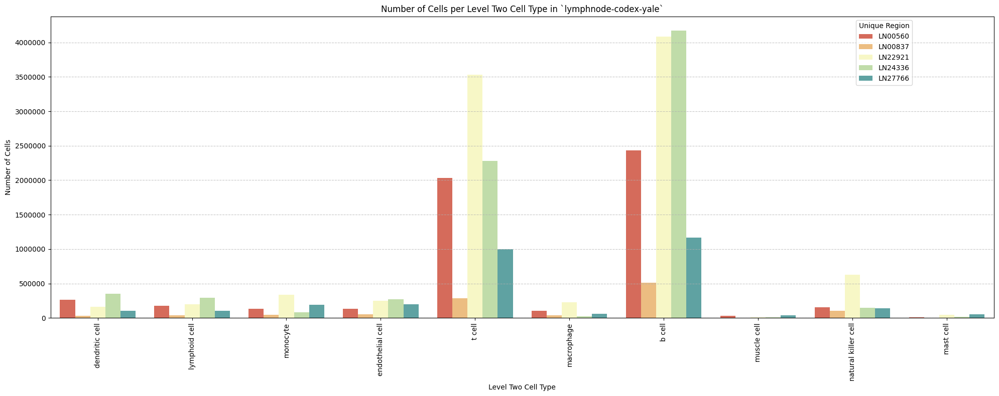
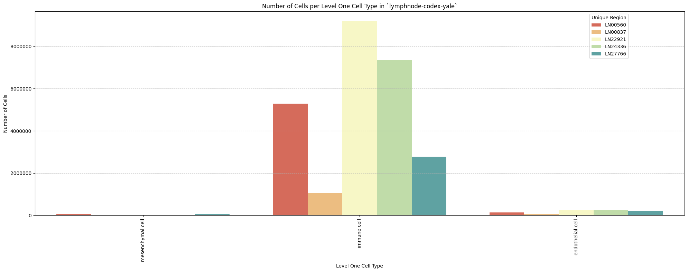
Distance Analysis
# Get mean, median, minimum, maximum distance per unique region per anchor cell type.
df_distance_stats = df_all_edges_with_cell_types.groupby(['Unique Region', 'Anchor Cell Type', 'Anchor Cell Type Level']).agg(
mean_distance=('Distance', 'mean'),
median_distance=('Distance', 'median'),
min_distance=('Distance', 'min'),
max_distance=('Distance', 'max')
).reset_index()
# Print the first few rows of the distance statistics DataFrame.
df_distance_stats| Unique Region | Anchor Cell Type | Anchor Cell Type Level | mean_distance | median_distance | min_distance | max_distance | |
|---|---|---|---|---|---|---|---|
| 0 | LN00560 | endothelial cell | Level One Cell Type | 86.248270 | 78.322089 | 4.875021 | 199.999931 |
| 1 | LN00560 | endothelial cell | Level Three Cell Type | 86.248270 | 78.322089 | 4.875021 | 199.999931 |
| 2 | LN00560 | endothelial cell | Level Two Cell Type | 86.248270 | 78.322089 | 4.875021 | 199.999931 |
| 3 | LN00837 | endothelial cell | Level One Cell Type | 65.648760 | 55.365786 | 6.102839 | 199.990502 |
| 4 | LN00837 | endothelial cell | Level Three Cell Type | 65.648760 | 55.365786 | 6.102839 | 199.990502 |
| 5 | LN00837 | endothelial cell | Level Two Cell Type | 65.648760 | 55.365786 | 6.102839 | 199.990502 |
| 6 | LN22921 | endothelial cell | Level One Cell Type | 69.028245 | 58.886066 | 4.797734 | 199.999849 |
| 7 | LN22921 | endothelial cell | Level Three Cell Type | 69.028245 | 58.886066 | 4.797734 | 199.999849 |
| 8 | LN22921 | endothelial cell | Level Two Cell Type | 69.028245 | 58.886066 | 4.797734 | 199.999849 |
| 9 | LN24336 | endothelial cell | Level One Cell Type | 62.287459 | 51.618910 | 4.235994 | 199.999774 |
| 10 | LN24336 | endothelial cell | Level Three Cell Type | 62.287459 | 51.618910 | 4.235994 | 199.999774 |
| 11 | LN24336 | endothelial cell | Level Two Cell Type | 62.287459 | 51.618910 | 4.235994 | 199.999774 |
| 12 | LN27766 | endothelial cell | Level One Cell Type | 48.661838 | 37.794400 | 5.664908 | 199.999790 |
| 13 | LN27766 | endothelial cell | Level Three Cell Type | 48.661838 | 37.794400 | 5.664908 | 199.999790 |
| 14 | LN27766 | endothelial cell | Level Two Cell Type | 48.661838 | 37.794400 | 5.664908 | 199.999790 |
Level One Cell Type Analysis
# Get mean, median, minimum, maximum distance per cell type in all unique regions.
cell_type_level = 'Level One Cell Type'
df_all_edges_with_cell_type_level = df_all_edges_with_cell_types[(df_all_edges_with_cell_types['Anchor Cell Type Level'] == cell_type_level) & (df_all_edges_with_cell_types['Anchor Cell Type'] == anchor_cell_type_dict[cell_type_level])]
df_distance_stats_cell_type_level = df_all_edges_with_cell_type_level.groupby([cell_type_level, 'Unique Region']).agg(
mean_distance=('Distance', 'mean'),
median_distance=('Distance', 'median'),
min_distance=('Distance', 'min'),
max_distance=('Distance', 'max')
).reset_index()
df_distance_stats_cell_type_level| Level One Cell Type | Unique Region | mean_distance | median_distance | min_distance | max_distance | |
|---|---|---|---|---|---|---|
| 0 | immune cell | LN00560 | 86.230167 | 78.283379 | 4.875021 | 199.999931 |
| 1 | immune cell | LN00837 | 65.658556 | 55.426203 | 6.102839 | 199.990502 |
| 2 | immune cell | LN22921 | 69.098860 | 58.969275 | 4.797734 | 199.999849 |
| 3 | immune cell | LN24336 | 62.325526 | 51.657698 | 4.235994 | 199.999774 |
| 4 | immune cell | LN27766 | 48.323776 | 37.625713 | 5.664908 | 199.999790 |
| 5 | mesenchymal cell | LN00560 | 88.029798 | 81.864293 | 6.239511 | 199.836667 |
| 6 | mesenchymal cell | LN00837 | 64.156297 | 47.402660 | 9.376279 | 199.972438 |
| 7 | mesenchymal cell | LN22921 | 42.860136 | 30.269759 | 6.260871 | 199.945312 |
| 8 | mesenchymal cell | LN24336 | 45.284939 | 34.253833 | 7.974461 | 199.351793 |
| 9 | mesenchymal cell | LN27766 | 63.171914 | 49.198156 | 6.110041 | 199.979704 |
# Get top five and bottom five cell types with respect to mean distance in each unique region separately.
def get_top_bottom_cell_types_by_mean(df, cell_type_level, unique_region, top_n=5):
# Filter the DataFrame for the specified unique region and cell type level
df_filtered = df[df['Unique Region'] == unique_region]
# Group by the specified cell type level and calculate mean distance
df_grouped = df_filtered.groupby(cell_type_level).agg(mean_distance=('Distance', 'mean')).reset_index()
# Sort by mean distance to get top and bottom cell types
df_sorted = df_grouped.sort_values(by='mean_distance', ascending=False)
# Get top N and bottom N cell types
top_cell_types = df_sorted.head(top_n)
bottom_cell_types = df_sorted.tail(top_n)
return top_cell_types, bottom_cell_types
# Get top and bottom cell types for each unique region in the dataset.
unique_regions = df_all_edges_with_cell_type_level['Unique Region'].unique()
for region in unique_regions:
top_bottom = get_top_bottom_cell_types_by_mean(df_all_edges_with_cell_type_level, cell_type_level, region)
print(f"\nTop 5 cell types in {region}:")
print(top_bottom[0])
print(f"\nBottom 5 cell types in {region}:")
print(top_bottom[1])
Top 5 cell types in LN00560:
Level One Cell Type mean_distance
1 mesenchymal cell 88.029798
0 immune cell 86.230167
Bottom 5 cell types in LN00560:
Level One Cell Type mean_distance
1 mesenchymal cell 88.029798
0 immune cell 86.230167
Top 5 cell types in LN00837:
Level One Cell Type mean_distance
0 immune cell 65.658556
1 mesenchymal cell 64.156297
Bottom 5 cell types in LN00837:
Level One Cell Type mean_distance
0 immune cell 65.658556
1 mesenchymal cell 64.156297
Top 5 cell types in LN22921:
Level One Cell Type mean_distance
0 immune cell 69.098860
1 mesenchymal cell 42.860136
Bottom 5 cell types in LN22921:
Level One Cell Type mean_distance
0 immune cell 69.098860
1 mesenchymal cell 42.860136
Top 5 cell types in LN24336:
Level One Cell Type mean_distance
0 immune cell 62.325526
1 mesenchymal cell 45.284939
Bottom 5 cell types in LN24336:
Level One Cell Type mean_distance
0 immune cell 62.325526
1 mesenchymal cell 45.284939
Top 5 cell types in LN27766:
Level One Cell Type mean_distance
1 mesenchymal cell 63.171914
0 immune cell 48.323776
Bottom 5 cell types in LN27766:
Level One Cell Type mean_distance
1 mesenchymal cell 63.171914
0 immune cell 48.323776# Get top five and bottom five cell types with respect to median distance in each unique region separately.
def get_top_bottom_cell_types_by_median(df, cell_type_level, unique_region, top_n=5):
# Filter the DataFrame for the specified unique region and cell type level
df_filtered = df[df['Unique Region'] == unique_region]
# Group by the specified cell type level and calculate median distance
df_grouped = df_filtered.groupby(cell_type_level).agg(median_distance=('Distance', 'median')).reset_index()
# Sort by median distance to get top and bottom cell types
df_sorted = df_grouped.sort_values(by='median_distance', ascending=False)
# Get top N and bottom N cell types
top_cell_types = df_sorted.head(top_n)
bottom_cell_types = df_sorted.tail(top_n)
return top_cell_types, bottom_cell_types
# Get top and bottom cell types for each unique region in the dataset.
unique_regions = df_all_edges_with_cell_type_level['Unique Region'].unique()
for region in unique_regions:
top_bottom = get_top_bottom_cell_types_by_median(df_all_edges_with_cell_type_level, cell_type_level, region)
print(f"\nTop 5 cell types in {region}:")
print(top_bottom[0])
print(f"\nBottom 5 cell types in {region}:")
print(top_bottom[1])
Top 5 cell types in LN00560:
Level One Cell Type median_distance
1 mesenchymal cell 81.864293
0 immune cell 78.283379
Bottom 5 cell types in LN00560:
Level One Cell Type median_distance
1 mesenchymal cell 81.864293
0 immune cell 78.283379
Top 5 cell types in LN00837:
Level One Cell Type median_distance
0 immune cell 55.426203
1 mesenchymal cell 47.402660
Bottom 5 cell types in LN00837:
Level One Cell Type median_distance
0 immune cell 55.426203
1 mesenchymal cell 47.402660
Top 5 cell types in LN22921:
Level One Cell Type median_distance
0 immune cell 58.969275
1 mesenchymal cell 30.269759
Bottom 5 cell types in LN22921:
Level One Cell Type median_distance
0 immune cell 58.969275
1 mesenchymal cell 30.269759
Top 5 cell types in LN24336:
Level One Cell Type median_distance
0 immune cell 51.657698
1 mesenchymal cell 34.253833
Bottom 5 cell types in LN24336:
Level One Cell Type median_distance
0 immune cell 51.657698
1 mesenchymal cell 34.253833
Top 5 cell types in LN27766:
Level One Cell Type median_distance
1 mesenchymal cell 49.198156
0 immune cell 37.625713
Bottom 5 cell types in LN27766:
Level One Cell Type median_distance
1 mesenchymal cell 49.198156
0 immune cell 37.625713# Calculate regional variability
def calculate_regional_variability(df_all_edges_with_cell_type_level, cell_type_level):
""" Calculate regional variability for distances in the given DataFrame.
"""
regional_variability = df_all_edges_with_cell_type_level.groupby('Unique Region')['Distance'].agg([
('mean', 'mean'),
('std', 'std')
]).round(2)
# Add CV as percentage
regional_variability['CV (%)'] = (regional_variability['std'] / regional_variability['mean'] * 100).round(1)
print("\nRegional Variability Analysis:")
print("Mean: Average distance in each region")
print("Std: Standard deviation of distances")
print("CV: Coefficient of Variation (std/mean * 100%)")
print(regional_variability)
# Calculate variability for each cell type
cell_type_variability = df_all_edges_with_cell_type_level.groupby(cell_type_level)['Distance'].agg([
('mean', 'mean'),
('std', 'std')
]).round(2)
# Add CV as percentage
cell_type_variability['CV (%)'] = (cell_type_variability['std'] / cell_type_variability['mean'] * 100).round(1)
print("\nCell Type Variability Analysis (sorted by CV):")
print(cell_type_variability.sort_values('CV (%)', ascending=False))
calculate_regional_variability(df_all_edges_with_cell_type_level, cell_type_level)
Regional Variability Analysis:
Mean: Average distance in each region
Std: Standard deviation of distances
CV: Coefficient of Variation (std/mean * 100%)
mean std CV (%)
Unique Region
LN00560 86.25 50.97 59.1
LN00837 65.65 42.86 65.3
LN22921 69.03 43.55 63.1
LN24336 62.29 41.07 65.9
LN27766 48.66 35.83 73.6
Cell Type Variability Analysis (sorted by CV):
mean std CV (%)
Level One Cell Type
mesenchymal cell 65.39 48.18 73.7
immune cell 67.80 44.76 66.0# Define the standard region sequence for plots (Get all unique values in Unique Region column as a list.)
regions = df_all_edges_with_cell_types['Unique Region'].unique().tolist()
print("\nRegions in the data:")
print(regions)
Regions in the data:
['LN00560', 'LN00837', 'LN22921', 'LN24336', 'LN27766']# Generate Violin Plot
def plot_violin_cells_per_celltype(df_all_edges_with_cell_type_level, cell_type_level, output_dir, density_norm='area'):
sns.set_style("whitegrid")
sns.set_context("notebook", rc={"grid.linewidth": 2})
plt.figure(figsize=(10, 6))
plt.rcParams["svg.fonttype"] = 'none' # to store text as text, not as path
sns.violinplot(data=df_all_edges_with_cell_type_level, x=cell_type_level, y="Distance", density_norm=density_norm, common_norm=True, cut=0, inner="box", split=False, palette='Spectral', alpha=.9)
sns.set_theme(style="whitegrid")
sns.set_context("paper")
font_size = 10
plt.legend(fontsize=font_size)
plt.title(f'Violin Plot of distances by {cell_type_level} (Density Normalization: {density_norm})', fontsize=font_size)
plt.xlabel(f'{cell_type_level}', fontsize=font_size)
plt.ylabel('Distance (\u03bcm)', fontsize=font_size)
# Increase font size for all text in the figure
plt.xticks(fontsize=font_size)
plt.xticks(rotation=90)
plt.yticks(fontsize=font_size)
plt.tight_layout()
plt.savefig(os.path.join(output_dir, f'{dataset_dir}_violin_cells_per_celltype_{cell_type_level}.png'), dpi=300,
bbox_inches='tight',
pad_inches=0.5)
plt.savefig(os.path.join(output_dir, f'{dataset_dir}_violin_cells_per_celltype_{cell_type_level}.svg'), dpi=300,
bbox_inches='tight',
pad_inches=0.5)
plt.show()
plot_violin_cells_per_celltype(df_all_edges_with_cell_type_level, cell_type_level, os.path.join(basepath, figures_output_dir), density_norm='area')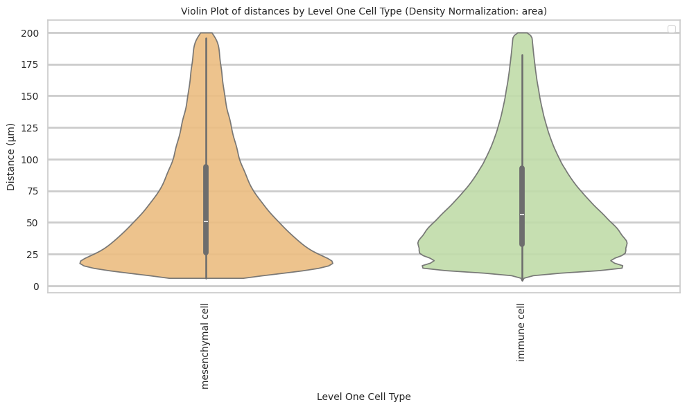
# Boxplots of distribution of distances by cell type and region.
def plot_distance_distribution_boxplots_by_region(df_all_edges_with_cell_type_level, cell_type_level, output_dir):
plt.figure(figsize=(16, 8))
plt.rcParams["svg.fonttype"] = 'none' # to store text as text, not as path
# Create categorical type with only the regions that exist in the data
available_regions = [r for r in regions if r in df_all_edges_with_cell_type_level['Unique Region'].unique()]
df_all_edges_with_cell_type_level['Unique Region'] = pd.Categorical(
df_all_edges_with_cell_type_level['Unique Region'],
categories=available_regions,
ordered=True
)
# Make box plot.
sns.boxplot(data=df_all_edges_with_cell_type_level, x=cell_type_level, y='Distance', hue='Unique Region', showfliers=False, palette='Spectral') # viridis or Spectral palette for better color distinction
font_size = 10
plt.xticks(rotation=90, ha='right', fontsize=font_size)
plt.yticks(fontsize=font_size)
plt.title(f'Distribution of distances by {cell_type_level} and region', fontsize=font_size)
plt.xlabel(f'{cell_type_level}', fontsize=font_size)
plt.ylabel('Distance (\u03bcm)', fontsize=font_size)
plt.legend(bbox_to_anchor=(1, 1), loc='upper left')
plt.tight_layout()
plt.savefig(os.path.join(output_dir, f'{dataset_dir}_distance_distribution_boxplots_by_region_{cell_type_level}.png'), dpi=300,
bbox_inches='tight',
pad_inches=0.5)
plt.savefig(os.path.join(output_dir, f'{dataset_dir}_distance_distribution_boxplots_by_region_{cell_type_level}.svg'), dpi=300,
bbox_inches='tight',
pad_inches=0.5)
plt.show()
plot_distance_distribution_boxplots_by_region(df_all_edges_with_cell_type_level, cell_type_level, os.path.join(basepath, figures_output_dir))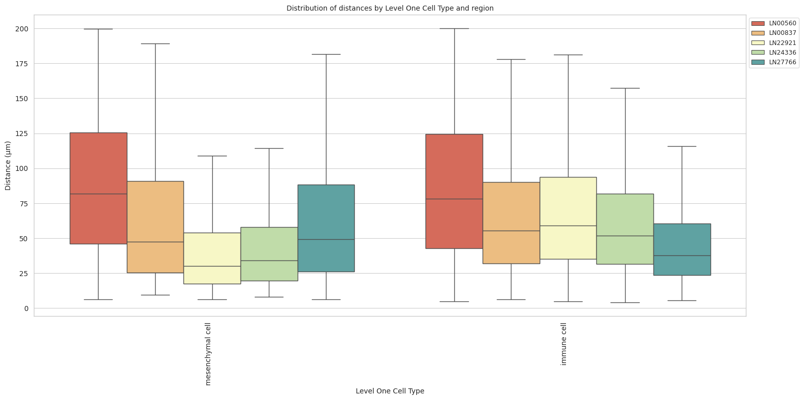
# Boxplots of distribution of distances by cell type and region.
def plot_distance_distribution_heatmap(df_all_edges_with_cell_type_level, cell_type_level, output_dir):
pivot_data = df_all_edges_with_cell_type_level.pivot_table(
values='Distance',
index=cell_type_level,
columns='Unique Region',
aggfunc='median'
)
plt.figure(figsize=(15, 10))
plt.rcParams["svg.fonttype"] = 'none' # to store text as text, not as path
sns.heatmap(pivot_data, annot=True, fmt='.1f', cmap='Spectral')
plt.title(f'Heatmap of median distances by {cell_type_level}', fontsize=12)
font_size = 10
plt.xticks(rotation=90, ha='right', fontsize=font_size)
plt.yticks(fontsize=font_size)
plt.xlabel('Unique Region', fontsize=font_size)
plt.ylabel(f'{cell_type_level}', fontsize=font_size)
plt.tight_layout()
plt.savefig(os.path.join(output_dir, f'{dataset_dir}_distance_distribution_heatmap_{cell_type_level}.png'), dpi=300,
bbox_inches='tight',
pad_inches=0.5)
plt.savefig(os.path.join(output_dir, f'{dataset_dir}_distance_distribution_heatmap_{cell_type_level}.svg'), dpi=300,
bbox_inches='tight',
pad_inches=0.5)
plt.show()
plot_distance_distribution_heatmap(df_all_edges_with_cell_type_level, cell_type_level, os.path.join(basepath, figures_output_dir))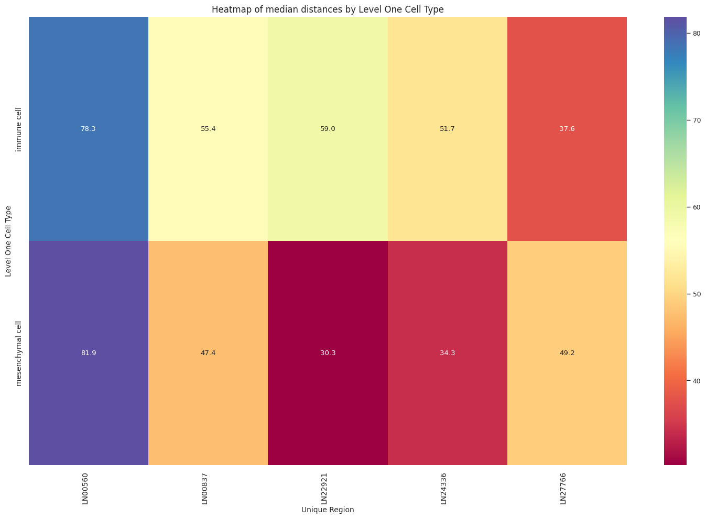
# Generate Violin Plot per unique region.
def plot_violin_plots_all_regions(df_all_edges_with_cell_type_level, cell_type_level, output_dir, density_norm="area"):
sns.set_style("whitegrid")
sns.set_context("notebook", rc={"grid.linewidth": 1})
font_size = 10
fig, axs = plt.subplots(5, 1, figsize=(10, 20)) # Adjusted figsize for horizontal layout
fig.suptitle(f'Distance distribution per {cell_type_level} in `{dataset_dir}` (density normalization = {density_norm})', fontsize=font_size, y=1)
plt.rcParams["svg.fonttype"] = 'none' # to store text as text, not as path
# Keep the sequence of Cell Types consistent across plots.
cell_types = sorted(df_all_edges_with_cell_type_level[cell_type_level].unique())
# Create a color palette based on the number of unique classes
color_palette = sns.color_palette("Spectral", n_colors=len(cell_types))
# Create a dictionary mapping class to color
class_color_dict = dict(zip(cell_types, color_palette))
for i, region in enumerate(regions):
data_reg = df_all_edges_with_cell_type_level[df_all_edges_with_cell_type_level['Unique Region'] == region]
sns.violinplot(data=data_reg, x=cell_type_level, y="Distance", density_norm=density_norm, common_norm=True, cut=0, inner="box", split=False, palette=class_color_dict, alpha=.9, ax=axs[i], hue=cell_type_level, legend=False, order=cell_types, fill=True)
axs[i].set_title(region, fontsize=font_size)
axs[i].set_xlabel('', fontsize=font_size)
axs[i].set_ylabel('Distance (\u03bcm)', fontsize=font_size)
# axs[i].tick_params(axis='x', labelrotation=90, labelsize=font_size)
# only show xtick labels for the last subplot
if i < len(regions) - 1:
axs[i].set_xticklabels([])
else:
axs[i].set_xticklabels(cell_types, fontsize=font_size, rotation=90, ha='right')
# axs[i].set_ylim(0, data_reg['Distance'].max() * 1.1) # Set y-limits to be consistent across all plots
axs[i].tick_params(axis='both', labelsize=font_size)
# Use fig.text for precise label positioning
fig.figure.text(0.5, -0.02, f'{cell_type_level}', ha='center', va='bottom', fontsize=font_size)
plt.tight_layout()
plt.savefig(os.path.join(output_dir, f'{dataset_dir}_violin_plots_all_regions_{cell_type_level}.png'), dpi=300,
bbox_inches='tight',
pad_inches=0.5)
plt.savefig(os.path.join(output_dir, f'{dataset_dir}_violin_plots_all_regions_{cell_type_level}.svg'), dpi=300,
bbox_inches='tight',
pad_inches=0.5)
plt.show()
plot_violin_plots_all_regions(df_all_edges_with_cell_type_level, cell_type_level, os.path.join(basepath, figures_output_dir), density_norm="count") # density_norm="count" or "area" can be used based on preference.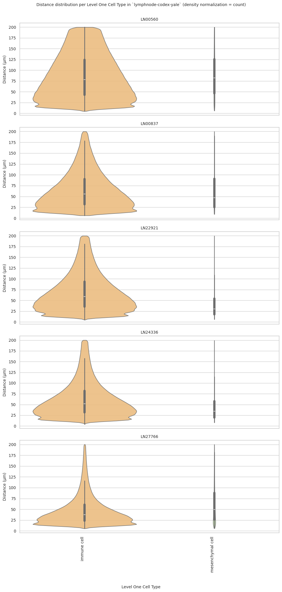
Level Two Cell Type Analysis
# Get mean, median, minimum, maximum distance per cell type in all unique regions.
cell_type_level = 'Level Two Cell Type'
df_all_edges_with_cell_type_level = df_all_edges_with_cell_types[(df_all_edges_with_cell_types['Anchor Cell Type Level'] == cell_type_level) & (df_all_edges_with_cell_types['Anchor Cell Type'] == anchor_cell_type_dict[cell_type_level])]
df_distance_stats_cell_type_level = df_all_edges_with_cell_type_level.groupby([cell_type_level, 'Unique Region']).agg(
mean_distance=('Distance', 'mean'),
median_distance=('Distance', 'median'),
min_distance=('Distance', 'min'),
max_distance=('Distance', 'max')
).reset_index()
df_distance_stats_cell_type_level| Level Two Cell Type | Unique Region | mean_distance | median_distance | min_distance | max_distance | |
|---|---|---|---|---|---|---|
| 0 | b cell | LN00560 | 88.672883 | 81.031234 | 4.875021 | 199.999931 |
| 1 | b cell | LN00837 | 71.823837 | 61.529348 | 6.638355 | 199.990502 |
| 2 | b cell | LN22921 | 82.039046 | 72.283854 | 4.797734 | 199.999849 |
| 3 | b cell | LN24336 | 64.496210 | 53.491989 | 5.385425 | 199.999276 |
| 4 | b cell | LN27766 | 58.734683 | 45.181006 | 6.945505 | 199.999790 |
| 5 | dendritic cell | LN00560 | 69.328460 | 57.716266 | 6.239511 | 199.990815 |
| 6 | dendritic cell | LN00837 | 56.462073 | 48.013498 | 6.578968 | 199.972438 |
| 7 | dendritic cell | LN22921 | 73.651623 | 60.772678 | 7.006536 | 199.967413 |
| 8 | dendritic cell | LN24336 | 59.716750 | 50.896772 | 7.264940 | 199.995753 |
| 9 | dendritic cell | LN27766 | 40.751088 | 31.531565 | 7.060869 | 199.936083 |
| 10 | lymphoid cell | LN00560 | 87.916868 | 81.987260 | 6.472932 | 199.985560 |
| 11 | lymphoid cell | LN00837 | 47.074148 | 39.426220 | 6.102839 | 199.566202 |
| 12 | lymphoid cell | LN22921 | 66.159509 | 52.261744 | 5.680996 | 199.945578 |
| 13 | lymphoid cell | LN24336 | 71.342591 | 58.007388 | 6.837350 | 199.999774 |
| 14 | lymphoid cell | LN27766 | 52.863464 | 34.486844 | 6.130197 | 199.989882 |
| 15 | macrophage | LN00560 | 78.607505 | 68.799241 | 7.336973 | 199.994850 |
| 16 | macrophage | LN00837 | 56.992624 | 50.840886 | 9.008524 | 199.753164 |
| 17 | macrophage | LN22921 | 54.901756 | 47.901377 | 6.583548 | 199.929894 |
| 18 | macrophage | LN24336 | 79.116158 | 67.811076 | 7.957836 | 199.937893 |
| 19 | macrophage | LN27766 | 51.519747 | 48.035642 | 7.765481 | 197.595104 |
| 20 | mast cell | LN00560 | 99.372310 | 96.167629 | 10.595659 | 199.849460 |
| 21 | mast cell | LN00837 | 65.670488 | 55.672843 | 10.448412 | 197.309722 |
| 22 | mast cell | LN22921 | 52.593234 | 44.533122 | 5.595661 | 198.746019 |
| 23 | mast cell | LN24336 | 85.567104 | 74.870233 | 9.498461 | 199.956401 |
| 24 | mast cell | LN27766 | 43.276579 | 33.640270 | 8.008464 | 199.891157 |
| 25 | monocyte | LN00560 | 89.144747 | 82.996331 | 7.532715 | 199.991027 |
| 26 | monocyte | LN00837 | 55.526799 | 45.104939 | 8.037716 | 199.980528 |
| 27 | monocyte | LN22921 | 50.021763 | 40.595156 | 5.302953 | 199.957450 |
| 28 | monocyte | LN24336 | 60.846991 | 44.274679 | 7.100671 | 199.964176 |
| 29 | monocyte | LN27766 | 49.144810 | 45.352857 | 7.274465 | 199.927731 |
| 30 | muscle cell | LN00560 | 86.522830 | 80.072416 | 7.366499 | 199.827904 |
| 31 | muscle cell | LN00837 | 59.032529 | 44.506487 | 9.537860 | 196.964611 |
| 32 | muscle cell | LN22921 | 39.150671 | 28.447433 | 6.260871 | 199.593551 |
| 33 | muscle cell | LN24336 | 43.536294 | 30.191094 | 7.974461 | 199.351793 |
| 34 | muscle cell | LN27766 | 62.912204 | 48.334648 | 6.110041 | 199.979704 |
| 35 | natural killer cell | LN00560 | 86.771851 | 79.778126 | 6.896002 | 199.981161 |
| 36 | natural killer cell | LN00837 | 57.099449 | 50.561814 | 7.570372 | 199.852375 |
| 37 | natural killer cell | LN22921 | 57.361924 | 51.657575 | 6.314864 | 199.963468 |
| 38 | natural killer cell | LN24336 | 85.475053 | 75.480916 | 6.704395 | 199.995869 |
| 39 | natural killer cell | LN27766 | 35.518688 | 30.995884 | 5.664908 | 199.029670 |
| 40 | t cell | LN00560 | 86.289131 | 78.881215 | 5.603447 | 199.999549 |
| 41 | t cell | LN00837 | 64.029926 | 54.434361 | 6.556713 | 199.971033 |
| 42 | t cell | LN22921 | 60.493650 | 53.470688 | 5.481371 | 199.996959 |
| 43 | t cell | LN24336 | 56.612429 | 47.942598 | 4.235994 | 199.997767 |
| 44 | t cell | LN27766 | 40.031514 | 32.772272 | 5.864464 | 199.874886 |
# Get top and bottom cell types for each unique region in the dataset.
unique_regions = df_all_edges_with_cell_type_level['Unique Region'].unique()
for region in unique_regions:
top_bottom = get_top_bottom_cell_types_by_mean(df_all_edges_with_cell_type_level, cell_type_level, region)
print(f"\nTop 5 cell types in {region}:")
print(top_bottom[0])
print(f"\nBottom 5 cell types in {region}:")
print(top_bottom[1])
Top 5 cell types in LN00560:
Level Two Cell Type mean_distance
4 mast cell 99.372310
5 monocyte 89.144747
0 b cell 88.672883
2 lymphoid cell 87.916868
7 natural killer cell 86.771851
Bottom 5 cell types in LN00560:
Level Two Cell Type mean_distance
7 natural killer cell 86.771851
6 muscle cell 86.522830
8 t cell 86.289131
3 macrophage 78.607505
1 dendritic cell 69.328460
Top 5 cell types in LN00837:
Level Two Cell Type mean_distance
0 b cell 71.823837
4 mast cell 65.670488
8 t cell 64.029926
6 muscle cell 59.032529
7 natural killer cell 57.099449
Bottom 5 cell types in LN00837:
Level Two Cell Type mean_distance
7 natural killer cell 57.099449
3 macrophage 56.992624
1 dendritic cell 56.462073
5 monocyte 55.526799
2 lymphoid cell 47.074148
Top 5 cell types in LN22921:
Level Two Cell Type mean_distance
0 b cell 82.039046
1 dendritic cell 73.651623
2 lymphoid cell 66.159509
8 t cell 60.493650
7 natural killer cell 57.361924
Bottom 5 cell types in LN22921:
Level Two Cell Type mean_distance
7 natural killer cell 57.361924
3 macrophage 54.901756
4 mast cell 52.593234
5 monocyte 50.021763
6 muscle cell 39.150671
Top 5 cell types in LN24336:
Level Two Cell Type mean_distance
4 mast cell 85.567104
7 natural killer cell 85.475053
3 macrophage 79.116158
2 lymphoid cell 71.342591
0 b cell 64.496210
Bottom 5 cell types in LN24336:
Level Two Cell Type mean_distance
0 b cell 64.496210
5 monocyte 60.846991
1 dendritic cell 59.716750
8 t cell 56.612429
6 muscle cell 43.536294
Top 5 cell types in LN27766:
Level Two Cell Type mean_distance
6 muscle cell 62.912204
0 b cell 58.734683
2 lymphoid cell 52.863464
3 macrophage 51.519747
5 monocyte 49.144810
Bottom 5 cell types in LN27766:
Level Two Cell Type mean_distance
5 monocyte 49.144810
4 mast cell 43.276579
1 dendritic cell 40.751088
8 t cell 40.031514
7 natural killer cell 35.518688# Get top and bottom cell types for each unique region in the dataset.
unique_regions = df_all_edges_with_cell_type_level['Unique Region'].unique()
for region in unique_regions:
top_bottom = get_top_bottom_cell_types_by_median(df_all_edges_with_cell_type_level, cell_type_level, region)
print(f"\nTop 5 cell types in {region}:")
print(top_bottom[0])
print(f"\nBottom 5 cell types in {region}:")
print(top_bottom[1])
Top 5 cell types in LN00560:
Level Two Cell Type median_distance
4 mast cell 96.167629
5 monocyte 82.996331
2 lymphoid cell 81.987260
0 b cell 81.031234
6 muscle cell 80.072416
Bottom 5 cell types in LN00560:
Level Two Cell Type median_distance
6 muscle cell 80.072416
7 natural killer cell 79.778126
8 t cell 78.881215
3 macrophage 68.799241
1 dendritic cell 57.716266
Top 5 cell types in LN00837:
Level Two Cell Type median_distance
0 b cell 61.529348
4 mast cell 55.672843
8 t cell 54.434361
3 macrophage 50.840886
7 natural killer cell 50.561814
Bottom 5 cell types in LN00837:
Level Two Cell Type median_distance
7 natural killer cell 50.561814
1 dendritic cell 48.013498
5 monocyte 45.104939
6 muscle cell 44.506487
2 lymphoid cell 39.426220
Top 5 cell types in LN22921:
Level Two Cell Type median_distance
0 b cell 72.283854
1 dendritic cell 60.772678
8 t cell 53.470688
2 lymphoid cell 52.261744
7 natural killer cell 51.657575
Bottom 5 cell types in LN22921:
Level Two Cell Type median_distance
7 natural killer cell 51.657575
3 macrophage 47.901377
4 mast cell 44.533122
5 monocyte 40.595156
6 muscle cell 28.447433
Top 5 cell types in LN24336:
Level Two Cell Type median_distance
7 natural killer cell 75.480916
4 mast cell 74.870233
3 macrophage 67.811076
2 lymphoid cell 58.007388
0 b cell 53.491989
Bottom 5 cell types in LN24336:
Level Two Cell Type median_distance
0 b cell 53.491989
1 dendritic cell 50.896772
8 t cell 47.942598
5 monocyte 44.274679
6 muscle cell 30.191094
Top 5 cell types in LN27766:
Level Two Cell Type median_distance
6 muscle cell 48.334648
3 macrophage 48.035642
5 monocyte 45.352857
0 b cell 45.181006
2 lymphoid cell 34.486844
Bottom 5 cell types in LN27766:
Level Two Cell Type median_distance
2 lymphoid cell 34.486844
4 mast cell 33.640270
8 t cell 32.772272
1 dendritic cell 31.531565
7 natural killer cell 30.995884calculate_regional_variability(df_all_edges_with_cell_type_level, cell_type_level)
Regional Variability Analysis:
Mean: Average distance in each region
Std: Standard deviation of distances
CV: Coefficient of Variation (std/mean * 100%)
mean std CV (%)
Unique Region
LN00560 86.25 50.97 59.1
LN00837 65.65 42.86 65.3
LN22921 69.03 43.55 63.1
LN24336 62.29 41.07 65.9
LN27766 48.66 35.83 73.6
Cell Type Variability Analysis (sorted by CV):
mean std CV (%)
Level Two Cell Type
muscle cell 65.17 48.20 74.0
mast cell 54.53 40.09 73.5
lymphoid cell 69.90 50.05 71.6
monocyte 57.09 39.95 70.0
dendritic cell 62.58 43.15 69.0
t cell 62.64 40.69 65.0
b cell 74.12 47.83 64.5
natural killer cell 60.56 38.98 64.4
macrophage 60.91 38.83 63.7plot_violin_cells_per_celltype(df_all_edges_with_cell_type_level, cell_type_level, os.path.join(basepath, figures_output_dir), density_norm='area')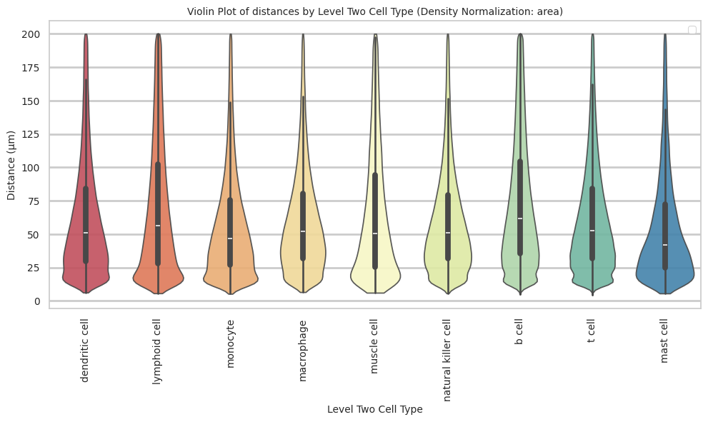
plot_distance_distribution_boxplots_by_region(df_all_edges_with_cell_type_level, cell_type_level, os.path.join(basepath, figures_output_dir))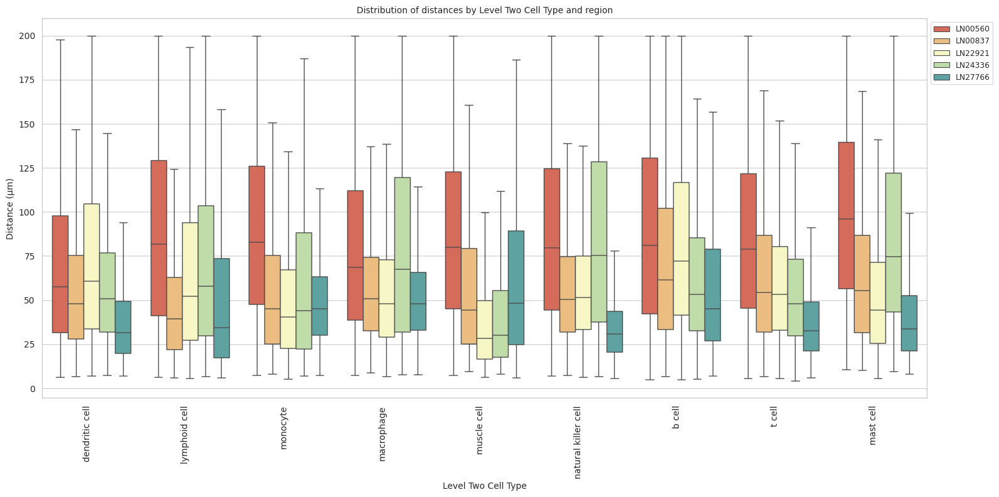
plot_distance_distribution_heatmap(df_all_edges_with_cell_type_level, cell_type_level, os.path.join(basepath, figures_output_dir))plot_violin_plots_all_regions(df_all_edges_with_cell_type_level, cell_type_level, os.path.join(basepath, figures_output_dir), density_norm="count") # Or, density_norm="count" or "area" based on preference.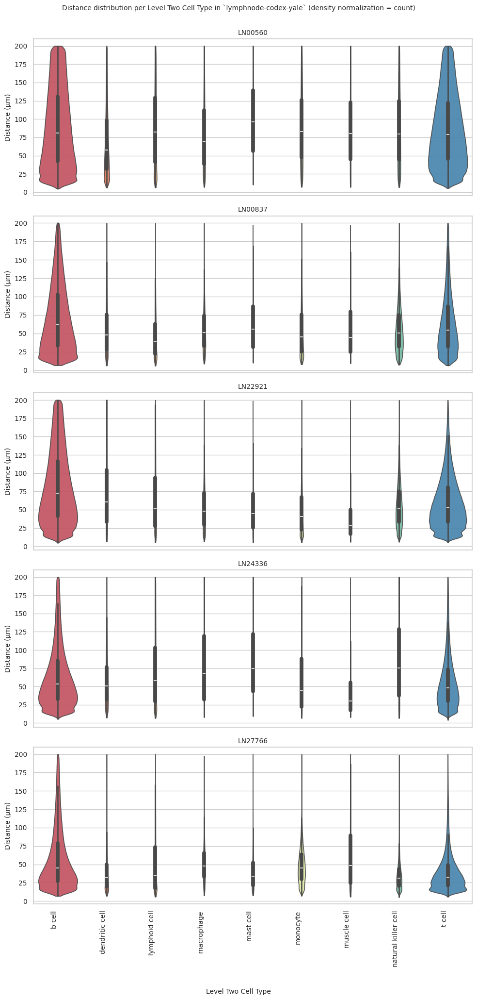
Level Three Cell Type Analysis
# Get mean, median, minimum, maximum distance per cell type in all unique regions.
cell_type_level = 'Level Three Cell Type'
df_all_edges_with_cell_type_level = df_all_edges_with_cell_types[(df_all_edges_with_cell_types['Anchor Cell Type Level'] == cell_type_level) & (df_all_edges_with_cell_types['Anchor Cell Type'] == anchor_cell_type_dict[cell_type_level])]
df_distance_stats_cell_type_level = df_all_edges_with_cell_type_level.groupby([cell_type_level, 'Unique Region']).agg(
mean_distance=('Distance', 'mean'),
median_distance=('Distance', 'median'),
min_distance=('Distance', 'min'),
max_distance=('Distance', 'max')
).reset_index()
df_distance_stats_cell_type_level| Level Three Cell Type | Unique Region | mean_distance | median_distance | min_distance | max_distance | |
|---|---|---|---|---|---|---|
| 0 | b cell:activated | LN00560 | 89.268466 | 82.035282 | 8.847019 | 199.985969 |
| 1 | b cell:activated | LN00837 | 103.892159 | 103.148832 | 10.202282 | 199.981139 |
| 2 | b cell:activated | LN22921 | 109.313037 | 109.134587 | 8.085613 | 199.973049 |
| 3 | b cell:activated | LN24336 | 78.439047 | 66.929947 | 7.599001 | 199.996026 |
| 4 | b cell:activated | LN27766 | 78.187423 | 70.452448 | 8.815551 | 199.923293 |
| 5 | b cell:germinal center | LN00560 | 110.025798 | 109.326467 | 8.953891 | 199.992071 |
| 6 | b cell:germinal center | LN00837 | 78.530974 | 70.589407 | 6.764925 | 199.948612 |
| 7 | b cell:germinal center | LN22921 | 126.062410 | 132.087548 | 8.704566 | 199.997308 |
| 8 | b cell:germinal center | LN24336 | 55.226407 | 46.745157 | 6.177177 | 199.984885 |
| 9 | b cell:germinal center | LN27766 | 38.146639 | 31.915673 | 6.971266 | 199.976434 |
| 10 | b cell:germinal center pre-plasmablast | LN00560 | 108.711157 | 108.905779 | 10.916243 | 199.885291 |
| 11 | b cell:germinal center pre-plasmablast | LN00837 | 83.001064 | 73.750379 | 10.423996 | 198.874785 |
| 12 | b cell:germinal center pre-plasmablast | LN22921 | 124.921662 | 129.269694 | 21.259508 | 199.839116 |
| 13 | b cell:germinal center pre-plasmablast | LN24336 | 49.903464 | 44.611971 | 9.241914 | 199.310578 |
| 14 | b cell:germinal center pre-plasmablast | LN27766 | 35.862025 | 30.864602 | 9.355446 | 185.874318 |
| 15 | b cell:interferon | LN00560 | 102.444714 | 99.240528 | 12.591493 | 199.567126 |
| 16 | b cell:interferon | LN00837 | 114.785742 | 112.568316 | 11.572951 | 199.377967 |
| 17 | b cell:interferon | LN22921 | 131.162456 | 139.595461 | 10.238354 | 199.992291 |
| 18 | b cell:interferon | LN24336 | 110.398002 | 112.429843 | 9.327697 | 199.967757 |
| 19 | b cell:interferon | LN27766 | 105.614725 | 104.382767 | 10.816878 | 197.792760 |
| 20 | b cell:memory | LN00560 | 102.444467 | 100.377290 | 4.875021 | 199.999560 |
| 21 | b cell:memory | LN00837 | 78.391621 | 70.584824 | 6.930883 | 199.990502 |
| 22 | b cell:memory | LN22921 | 79.602200 | 69.989911 | 4.797734 | 199.999849 |
| 23 | b cell:memory | LN24336 | 80.076569 | 70.279767 | 5.385425 | 199.999276 |
| 24 | b cell:memory | LN27766 | 63.402763 | 51.599412 | 7.332202 | 199.999790 |
| 25 | b cell:naive | LN00560 | 69.258328 | 54.441120 | 6.145788 | 199.999931 |
| 26 | b cell:naive | LN00837 | 76.218061 | 67.309817 | 8.581020 | 199.947632 |
| 27 | b cell:naive | LN22921 | 92.860766 | 88.747737 | 7.604196 | 199.990872 |
| 28 | b cell:naive | LN24336 | 59.469003 | 50.735010 | 6.191827 | 199.997376 |
| 29 | b cell:naive | LN27766 | 75.836945 | 66.107927 | 8.170217 | 199.982514 |
| 30 | b cell:pre-germinal center | LN00560 | 125.145570 | 131.985475 | 10.090936 | 199.946647 |
| 31 | b cell:pre-germinal center | LN00837 | 91.106536 | 86.702315 | 11.493943 | 199.388265 |
| 32 | b cell:pre-germinal center | LN22921 | 132.997491 | 140.357258 | 9.438865 | 199.996039 |
| 33 | b cell:pre-germinal center | LN24336 | 105.067771 | 103.209786 | 9.577587 | 199.794374 |
| 34 | b cell:pre-germinal center | LN27766 | 106.766845 | 109.227324 | 10.393205 | 199.091629 |
| 35 | b cell:proliferating | LN00560 | 74.076170 | 61.983066 | 6.553306 | 199.999329 |
| 36 | b cell:proliferating | LN00837 | 51.889082 | 42.257876 | 6.638355 | 199.729762 |
| 37 | b cell:proliferating | LN22921 | 85.020031 | 73.684262 | 5.545646 | 199.994709 |
| 38 | b cell:proliferating | LN24336 | 51.541644 | 44.761244 | 6.192560 | 199.986801 |
| 39 | b cell:proliferating | LN27766 | 37.535815 | 31.282443 | 6.945505 | 199.958507 |
| 40 | dendritic cell:conventional 1 | LN00560 | 74.747687 | 65.742189 | 8.728357 | 199.915652 |
| 41 | dendritic cell:conventional 1 | LN00837 | 56.373332 | 49.048383 | 10.157812 | 195.342718 |
| 42 | dendritic cell:conventional 1 | LN22921 | 54.710012 | 47.481574 | 7.840607 | 199.269117 |
| 43 | dendritic cell:conventional 1 | LN24336 | 120.905504 | 124.830580 | 9.217633 | 199.995753 |
| 44 | dendritic cell:conventional 1 | LN27766 | 38.420549 | 34.650392 | 9.251431 | 198.827691 |
| 45 | dendritic cell:conventional 2 | LN00560 | 68.057708 | 57.691652 | 7.978659 | 199.949543 |
| 46 | dendritic cell:conventional 2 | LN00837 | 54.012741 | 45.497958 | 6.952205 | 199.902788 |
| 47 | dendritic cell:conventional 2 | LN22921 | 48.714428 | 41.297008 | 7.880744 | 199.807328 |
| 48 | dendritic cell:conventional 2 | LN24336 | 129.199183 | 136.077984 | 8.925008 | 199.994250 |
| 49 | dendritic cell:conventional 2 | LN27766 | 50.585663 | 45.848785 | 9.638823 | 196.531393 |
| 50 | dendritic cell:follicular | LN00560 | 90.484649 | 85.545859 | 6.239511 | 199.836667 |
| 51 | dendritic cell:follicular | LN00837 | 68.051364 | 50.274675 | 9.376279 | 199.972438 |
| 52 | dendritic cell:follicular | LN22921 | 46.702944 | 32.311309 | 7.006536 | 199.945312 |
| 53 | dendritic cell:follicular | LN24336 | 46.933889 | 37.744882 | 8.222905 | 198.852000 |
| 54 | dendritic cell:follicular | LN27766 | 63.576654 | 50.547417 | 7.463081 | 199.936083 |
| 55 | dendritic cell:migratory | LN00560 | 74.874860 | 65.090342 | 8.664038 | 199.904567 |
| 56 | dendritic cell:migratory | LN00837 | 67.620372 | 61.629700 | 10.996842 | 199.452052 |
| 57 | dendritic cell:migratory | LN22921 | 63.298214 | 56.380191 | 10.370947 | 194.049890 |
| 58 | dendritic cell:migratory | LN24336 | 120.640773 | 127.698045 | 9.189187 | 199.945018 |
| 59 | dendritic cell:migratory | LN27766 | 43.524350 | 37.308495 | 10.455990 | 163.623264 |
| 60 | dendritic cell:plasmacytoid | LN00560 | 65.255968 | 51.800420 | 6.239585 | 199.990815 |
| 61 | dendritic cell:plasmacytoid | LN00837 | 54.379345 | 47.567074 | 6.578968 | 198.465924 |
| 62 | dendritic cell:plasmacytoid | LN22921 | 98.059750 | 93.010721 | 8.675605 | 199.967413 |
| 63 | dendritic cell:plasmacytoid | LN24336 | 53.708142 | 48.208903 | 7.264940 | 199.760738 |
| 64 | dendritic cell:plasmacytoid | LN27766 | 31.272411 | 27.099603 | 7.060869 | 199.496027 |
| 65 | lymphoid cell:innate | LN00560 | 87.916868 | 81.987260 | 6.472932 | 199.985560 |
| 66 | lymphoid cell:innate | LN00837 | 47.074148 | 39.426220 | 6.102839 | 199.566202 |
| 67 | lymphoid cell:innate | LN22921 | 66.159509 | 52.261744 | 5.680996 | 199.945578 |
| 68 | lymphoid cell:innate | LN24336 | 71.342591 | 58.007388 | 6.837350 | 199.999774 |
| 69 | lymphoid cell:innate | LN27766 | 52.863464 | 34.486844 | 6.130197 | 199.989882 |
| 70 | macrophage | LN00560 | 78.607505 | 68.799241 | 7.336973 | 199.994850 |
| 71 | macrophage | LN00837 | 56.992624 | 50.840886 | 9.008524 | 199.753164 |
| 72 | macrophage | LN22921 | 54.901756 | 47.901377 | 6.583548 | 199.929894 |
| 73 | macrophage | LN24336 | 79.116158 | 67.811076 | 7.957836 | 199.937893 |
| 74 | macrophage | LN27766 | 51.519747 | 48.035642 | 7.765481 | 197.595104 |
| 75 | mast cell | LN00560 | 99.372310 | 96.167629 | 10.595659 | 199.849460 |
| 76 | mast cell | LN00837 | 65.670488 | 55.672843 | 10.448412 | 197.309722 |
| 77 | mast cell | LN22921 | 52.593234 | 44.533122 | 5.595661 | 198.746019 |
| 78 | mast cell | LN24336 | 85.567104 | 74.870233 | 9.498461 | 199.956401 |
| 79 | mast cell | LN27766 | 43.276579 | 33.640270 | 8.008464 | 199.891157 |
| 80 | monocyte | LN00560 | 89.144747 | 82.996331 | 7.532715 | 199.991027 |
| 81 | monocyte | LN00837 | 55.526799 | 45.104939 | 8.037716 | 199.980528 |
| 82 | monocyte | LN22921 | 50.021763 | 40.595156 | 5.302953 | 199.957450 |
| 83 | monocyte | LN24336 | 60.846991 | 44.274679 | 7.100671 | 199.964176 |
| 84 | monocyte | LN27766 | 49.144810 | 45.352857 | 7.274465 | 199.927731 |
| 85 | muscle cell:smooth | LN00560 | 86.522830 | 80.072416 | 7.366499 | 199.827904 |
| 86 | muscle cell:smooth | LN00837 | 59.032529 | 44.506487 | 9.537860 | 196.964611 |
| 87 | muscle cell:smooth | LN22921 | 39.150671 | 28.447433 | 6.260871 | 199.593551 |
| 88 | muscle cell:smooth | LN24336 | 43.536294 | 30.191094 | 7.974461 | 199.351793 |
| 89 | muscle cell:smooth | LN27766 | 62.912204 | 48.334648 | 6.110041 | 199.979704 |
| 90 | natural killer cell | LN00560 | 86.771851 | 79.778126 | 6.896002 | 199.981161 |
| 91 | natural killer cell | LN00837 | 57.099449 | 50.561814 | 7.570372 | 199.852375 |
| 92 | natural killer cell | LN22921 | 57.361924 | 51.657575 | 6.314864 | 199.963468 |
| 93 | natural killer cell | LN24336 | 85.475053 | 75.480916 | 6.704395 | 199.995869 |
| 94 | natural killer cell | LN27766 | 35.518688 | 30.995884 | 5.664908 | 199.029670 |
| 95 | plasma cell | LN00560 | 72.331097 | 59.404645 | 7.521666 | 199.951464 |
| 96 | plasma cell | LN00837 | 44.038633 | 35.479895 | 6.715191 | 199.593083 |
| 97 | plasma cell | LN22921 | 57.740290 | 52.704438 | 6.326851 | 199.734748 |
| 98 | plasma cell | LN24336 | 46.465649 | 41.440832 | 6.788876 | 199.974351 |
| 99 | plasma cell | LN27766 | 71.756242 | 57.171075 | 7.824266 | 199.998972 |
| 100 | t cell:cd4+ alpha-beta effector | LN00560 | 95.993355 | 91.765471 | 6.121488 | 199.999549 |
| 101 | t cell:cd4+ alpha-beta effector | LN00837 | 84.232618 | 72.495092 | 9.560197 | 199.960420 |
| 102 | t cell:cd4+ alpha-beta effector | LN22921 | 59.880497 | 51.975392 | 5.481371 | 199.966756 |
| 103 | t cell:cd4+ alpha-beta effector | LN24336 | 49.530880 | 41.003228 | 4.235994 | 199.994424 |
| 104 | t cell:cd4+ alpha-beta effector | LN27766 | 38.377382 | 30.867354 | 7.735967 | 199.330477 |
| 105 | t cell:cd4+ alpha-beta naive thymus-derived | LN00560 | 78.090613 | 68.183839 | 6.663214 | 199.996131 |
| 106 | t cell:cd4+ alpha-beta naive thymus-derived | LN00837 | 65.922173 | 58.227278 | 7.790914 | 199.942717 |
| 107 | t cell:cd4+ alpha-beta naive thymus-derived | LN22921 | 65.158677 | 57.901879 | 6.411245 | 199.952146 |
| 108 | t cell:cd4+ alpha-beta naive thymus-derived | LN24336 | 63.160522 | 53.431121 | 6.536176 | 199.997767 |
| 109 | t cell:cd4+ alpha-beta naive thymus-derived | LN27766 | 51.208692 | 41.425802 | 8.157567 | 199.874886 |
| 110 | t cell:cd8+ | LN00560 | 86.615013 | 79.180151 | 7.102615 | 199.996365 |
| 111 | t cell:cd8+ | LN00837 | 55.437898 | 46.240026 | 6.556713 | 199.971033 |
| 112 | t cell:cd8+ | LN22921 | 56.181049 | 49.659042 | 6.259795 | 199.940448 |
| 113 | t cell:cd8+ | LN24336 | 55.152276 | 48.343775 | 6.651539 | 199.966610 |
| 114 | t cell:cd8+ | LN27766 | 35.375142 | 30.384688 | 7.360558 | 198.852391 |
| 115 | t cell:cd8+ cd161+ | LN00560 | 90.056320 | 84.555500 | 7.182956 | 199.994788 |
| 116 | t cell:cd8+ cd161+ | LN00837 | 59.376177 | 44.384574 | 9.255595 | 199.566477 |
| 117 | t cell:cd8+ cd161+ | LN22921 | 66.069266 | 59.345402 | 6.111516 | 199.991352 |
| 118 | t cell:cd8+ cd161+ | LN24336 | 48.486466 | 40.243374 | 7.509943 | 198.654975 |
| 119 | t cell:cd8+ cd161+ | LN27766 | 37.296980 | 29.442390 | 8.137273 | 199.500140 |
| 120 | t cell:follicular helper | LN00560 | 82.058488 | 73.460999 | 5.603447 | 199.999450 |
| 121 | t cell:follicular helper | LN00837 | 61.714580 | 51.712027 | 7.083180 | 199.822547 |
| 122 | t cell:follicular helper | LN22921 | 63.786746 | 57.161618 | 6.077661 | 199.989836 |
| 123 | t cell:follicular helper | LN24336 | 54.536331 | 46.164723 | 6.099143 | 199.990253 |
| 124 | t cell:follicular helper | LN27766 | 42.271050 | 35.354972 | 7.276333 | 199.864371 |
| 125 | t cell:mature natural killer | LN00560 | 96.336149 | 93.203428 | 9.809964 | 199.942835 |
| 126 | t cell:mature natural killer | LN00837 | 67.373921 | 52.184751 | 8.295802 | 199.948155 |
| 127 | t cell:mature natural killer | LN22921 | 54.308640 | 46.321960 | 7.835377 | 199.907410 |
| 128 | t cell:mature natural killer | LN24336 | 47.357061 | 39.144706 | 6.153474 | 199.952564 |
| 129 | t cell:mature natural killer | LN27766 | 44.643981 | 32.162381 | 7.923749 | 199.151376 |
| 130 | t cell:regulatory | LN00560 | 100.303430 | 96.757788 | 9.233340 | 199.998294 |
| 131 | t cell:regulatory | LN00837 | 77.401648 | 68.048508 | 8.143654 | 199.771234 |
| 132 | t cell:regulatory | LN22921 | 52.599146 | 45.693505 | 5.852943 | 199.996959 |
| 133 | t cell:regulatory | LN24336 | 56.138669 | 47.849818 | 7.000655 | 199.993808 |
| 134 | t cell:regulatory | LN27766 | 31.841954 | 26.530015 | 5.864464 | 199.380478 |
| 135 | t cell:tim3+ | LN00560 | 90.805956 | 84.536161 | 7.447616 | 199.922781 |
| 136 | t cell:tim3+ | LN00837 | 65.234680 | 60.787009 | 13.362004 | 175.288619 |
| 137 | t cell:tim3+ | LN22921 | 51.362474 | 44.746693 | 8.064281 | 197.946082 |
| 138 | t cell:tim3+ | LN24336 | 59.124041 | 50.708968 | 7.018645 | 199.806968 |
| 139 | t cell:tim3+ | LN27766 | 29.328329 | 24.992139 | 8.628643 | 169.319098 |
# Get top and bottom cell types for each unique region in the dataset.
unique_regions = df_all_edges_with_cell_type_level['Unique Region'].unique()
for region in unique_regions:
top_bottom = get_top_bottom_cell_types_by_mean(df_all_edges_with_cell_type_level, cell_type_level, region)
print(f"\nTop 5 cell types in {region}:")
print(top_bottom[0])
print(f"\nBottom 5 cell types in {region}:")
print(top_bottom[1])
Top 5 cell types in LN00560:
Level Three Cell Type mean_distance
6 b cell:pre-germinal center 125.145570
1 b cell:germinal center 110.025798
2 b cell:germinal center pre-plasmablast 108.711157
3 b cell:interferon 102.444714
4 b cell:memory 102.444467
Bottom 5 cell types in LN00560:
Level Three Cell Type mean_distance
7 b cell:proliferating 74.076170
19 plasma cell 72.331097
5 b cell:naive 69.258328
9 dendritic cell:conventional 2 68.057708
12 dendritic cell:plasmacytoid 65.255968
Top 5 cell types in LN00837:
Level Three Cell Type mean_distance
3 b cell:interferon 114.785742
0 b cell:activated 103.892159
6 b cell:pre-germinal center 91.106536
20 t cell:cd4+ alpha-beta effector 84.232618
2 b cell:germinal center pre-plasmablast 83.001064
Bottom 5 cell types in LN00837:
Level Three Cell Type mean_distance
12 dendritic cell:plasmacytoid 54.379345
9 dendritic cell:conventional 2 54.012741
7 b cell:proliferating 51.889082
13 lymphoid cell:innate 47.074148
19 plasma cell 44.038633
Top 5 cell types in LN22921:
Level Three Cell Type mean_distance
6 b cell:pre-germinal center 132.997491
3 b cell:interferon 131.162456
1 b cell:germinal center 126.062410
2 b cell:germinal center pre-plasmablast 124.921662
0 b cell:activated 109.313037
Bottom 5 cell types in LN22921:
Level Three Cell Type mean_distance
27 t cell:tim3+ 51.362474
16 monocyte 50.021763
9 dendritic cell:conventional 2 48.714428
10 dendritic cell:follicular 46.702944
17 muscle cell:smooth 39.150671
Top 5 cell types in LN24336:
Level Three Cell Type mean_distance
9 dendritic cell:conventional 2 129.199183
8 dendritic cell:conventional 1 120.905504
11 dendritic cell:migratory 120.640773
3 b cell:interferon 110.398002
6 b cell:pre-germinal center 105.067771
Bottom 5 cell types in LN24336:
Level Three Cell Type mean_distance
23 t cell:cd8+ cd161+ 48.486466
25 t cell:mature natural killer 47.357061
10 dendritic cell:follicular 46.933889
19 plasma cell 46.465649
17 muscle cell:smooth 43.536294
Top 5 cell types in LN27766:
Level Three Cell Type mean_distance
6 b cell:pre-germinal center 106.766845
3 b cell:interferon 105.614725
0 b cell:activated 78.187423
5 b cell:naive 75.836945
19 plasma cell 71.756242
Bottom 5 cell types in LN27766:
Level Three Cell Type mean_distance
18 natural killer cell 35.518688
22 t cell:cd8+ 35.375142
26 t cell:regulatory 31.841954
12 dendritic cell:plasmacytoid 31.272411
27 t cell:tim3+ 29.328329# Get top and bottom cell types for each unique region in the dataset.
unique_regions = df_all_edges_with_cell_type_level['Unique Region'].unique()
for region in unique_regions:
top_bottom = get_top_bottom_cell_types_by_median(df_all_edges_with_cell_type_level, cell_type_level, region)
print(f"\nTop 5 cell types in {region}:")
print(top_bottom[0])
print(f"\nBottom 5 cell types in {region}:")
print(top_bottom[1])
Top 5 cell types in LN00560:
Level Three Cell Type median_distance
6 b cell:pre-germinal center 131.985475
1 b cell:germinal center 109.326467
2 b cell:germinal center pre-plasmablast 108.905779
4 b cell:memory 100.377290
3 b cell:interferon 99.240528
Bottom 5 cell types in LN00560:
Level Three Cell Type median_distance
7 b cell:proliferating 61.983066
19 plasma cell 59.404645
9 dendritic cell:conventional 2 57.691652
5 b cell:naive 54.441120
12 dendritic cell:plasmacytoid 51.800420
Top 5 cell types in LN00837:
Level Three Cell Type median_distance
3 b cell:interferon 112.568316
0 b cell:activated 103.148832
6 b cell:pre-germinal center 86.702315
2 b cell:germinal center pre-plasmablast 73.750379
20 t cell:cd4+ alpha-beta effector 72.495092
Bottom 5 cell types in LN00837:
Level Three Cell Type median_distance
17 muscle cell:smooth 44.506487
23 t cell:cd8+ cd161+ 44.384574
7 b cell:proliferating 42.257876
13 lymphoid cell:innate 39.426220
19 plasma cell 35.479895
Top 5 cell types in LN22921:
Level Three Cell Type median_distance
6 b cell:pre-germinal center 140.357258
3 b cell:interferon 139.595461
1 b cell:germinal center 132.087548
2 b cell:germinal center pre-plasmablast 129.269694
0 b cell:activated 109.134587
Bottom 5 cell types in LN22921:
Level Three Cell Type median_distance
15 mast cell 44.533122
9 dendritic cell:conventional 2 41.297008
16 monocyte 40.595156
10 dendritic cell:follicular 32.311309
17 muscle cell:smooth 28.447433
Top 5 cell types in LN24336:
Level Three Cell Type median_distance
9 dendritic cell:conventional 2 136.077984
11 dendritic cell:migratory 127.698045
8 dendritic cell:conventional 1 124.830580
3 b cell:interferon 112.429843
6 b cell:pre-germinal center 103.209786
Bottom 5 cell types in LN24336:
Level Three Cell Type median_distance
20 t cell:cd4+ alpha-beta effector 41.003228
23 t cell:cd8+ cd161+ 40.243374
25 t cell:mature natural killer 39.144706
10 dendritic cell:follicular 37.744882
17 muscle cell:smooth 30.191094
Top 5 cell types in LN27766:
Level Three Cell Type median_distance
6 b cell:pre-germinal center 109.227324
3 b cell:interferon 104.382767
0 b cell:activated 70.452448
5 b cell:naive 66.107927
19 plasma cell 57.171075
Bottom 5 cell types in LN27766:
Level Three Cell Type median_distance
22 t cell:cd8+ 30.384688
23 t cell:cd8+ cd161+ 29.442390
12 dendritic cell:plasmacytoid 27.099603
26 t cell:regulatory 26.530015
27 t cell:tim3+ 24.992139calculate_regional_variability(df_all_edges_with_cell_type_level, cell_type_level)
Regional Variability Analysis:
Mean: Average distance in each region
Std: Standard deviation of distances
CV: Coefficient of Variation (std/mean * 100%)
mean std CV (%)
Unique Region
LN00560 86.25 50.97 59.1
LN00837 65.65 42.86 65.3
LN22921 69.03 43.55 63.1
LN24336 62.29 41.07 65.9
LN27766 48.66 35.83 73.6
Cell Type Variability Analysis (sorted by CV):
mean std CV (%)
Level Three Cell Type
muscle cell:smooth 65.17 48.20 74.0
mast cell 54.53 40.09 73.5
dendritic cell:follicular 65.68 48.16 73.3
lymphoid cell:innate 69.90 50.05 71.6
t cell:mature natural killer 54.65 39.02 71.4
t cell:regulatory 55.45 39.00 70.3
b cell:germinal center 70.57 49.44 70.1
monocyte 57.09 39.95 70.0
b cell:proliferating 65.55 45.77 69.8
dendritic cell:conventional 2 66.62 45.99 69.0
dendritic cell:plasmacytoid 59.26 40.45 68.3
t cell:cd4+ alpha-beta effector 68.30 45.44 66.5
t cell:cd8+ 61.29 40.36 65.9
t cell:cd8+ cd161+ 66.32 42.96 64.8
natural killer cell 60.56 38.98 64.4
dendritic cell:conventional 1 74.03 47.68 64.4
t cell:tim3+ 69.06 44.31 64.2
b cell:naive 71.23 45.65 64.1
macrophage 60.91 38.83 63.7
b cell:germinal center pre-plasmablast 52.90 33.19 62.7
dendritic cell:migratory 80.92 50.55 62.5
t cell:follicular helper 63.41 39.65 62.5
t cell:cd4+ alpha-beta naive thymus-derived 64.99 40.45 62.2
plasma cell 54.58 33.43 61.2
b cell:memory 82.07 49.33 60.1
b cell:activated 87.40 49.44 56.6
b cell:interferon 115.91 51.01 44.0
b cell:pre-germinal center 124.16 48.98 39.4plot_violin_cells_per_celltype(df_all_edges_with_cell_type_level, cell_type_level, os.path.join(basepath, figures_output_dir), density_norm='area')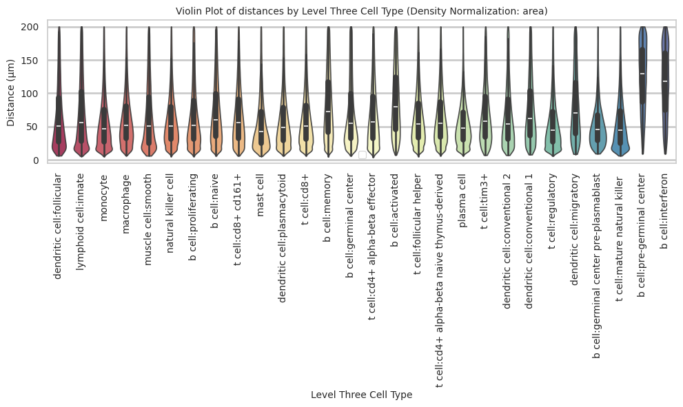
plot_distance_distribution_boxplots_by_region(df_all_edges_with_cell_type_level, cell_type_level, os.path.join(basepath, figures_output_dir))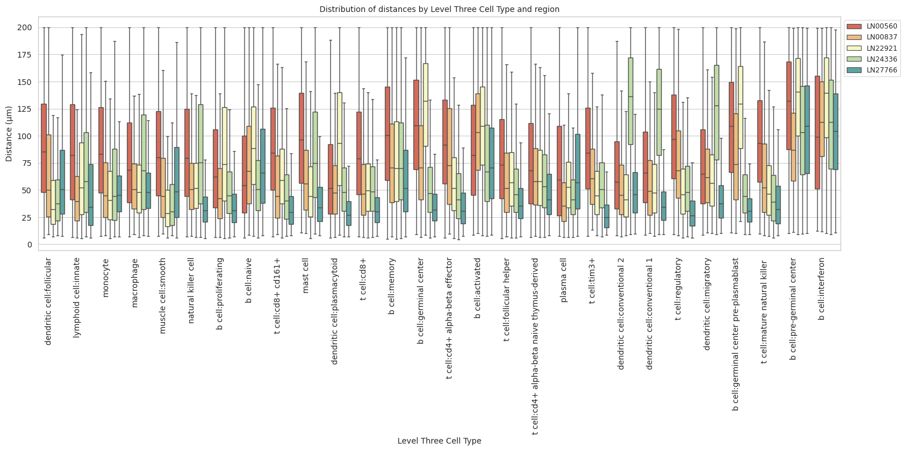
plot_distance_distribution_heatmap(df_all_edges_with_cell_type_level, cell_type_level, os.path.join(basepath, figures_output_dir))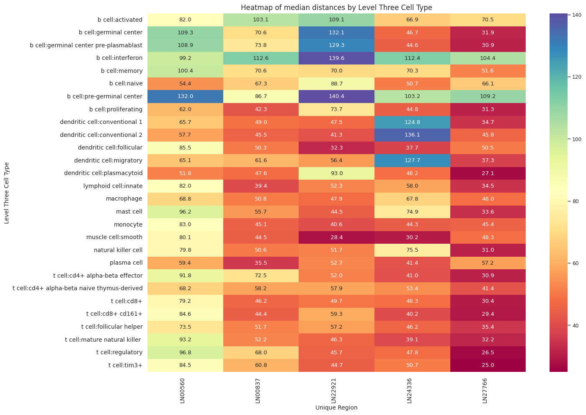
plot_violin_plots_all_regions(df_all_edges_with_cell_type_level, cell_type_level, os.path.join(basepath, figures_output_dir), density_norm="count") # Or, density_norm="count" or "area" based on preference.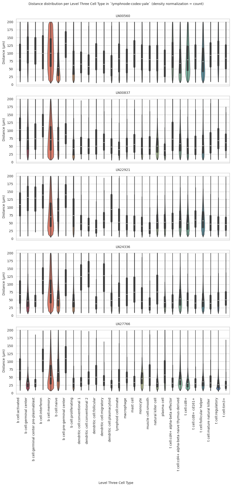